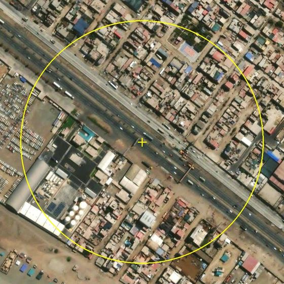
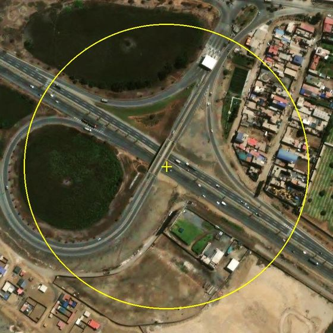
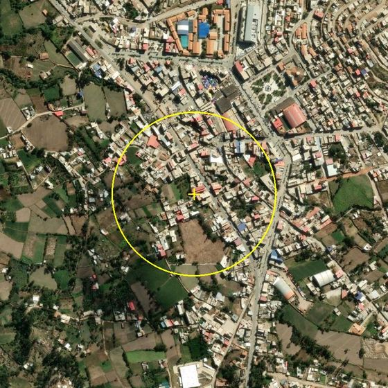
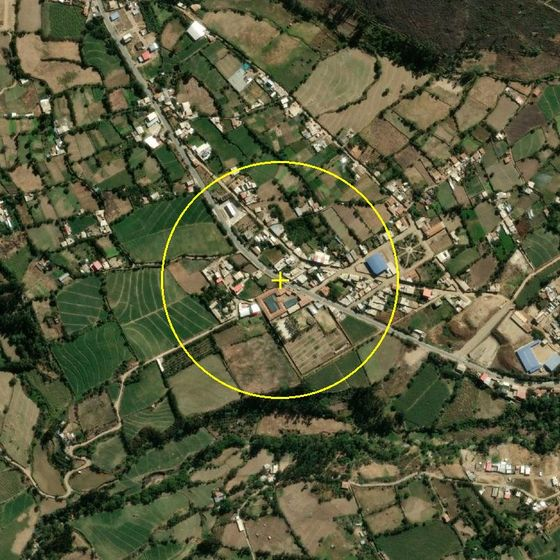
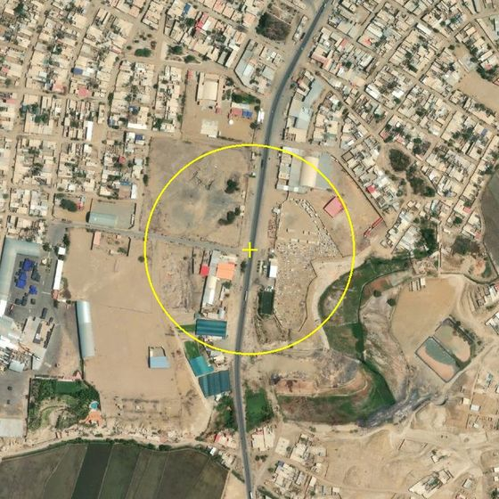
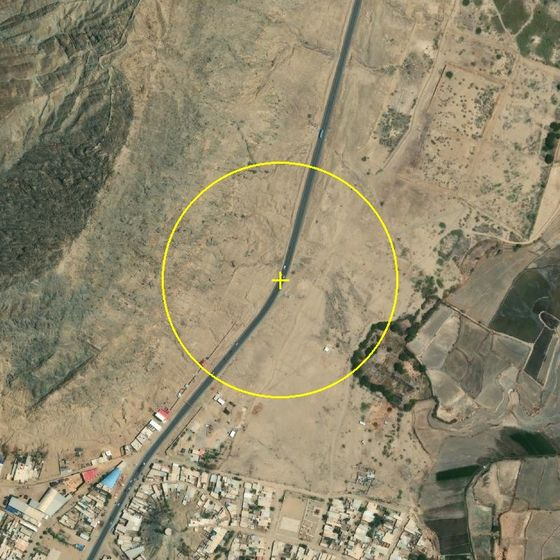

Los siniestros fatales se repiten en los mismos lugares
Cada punto gris es un siniestro fatal. Las columnas son puntos negros, más altas cuantos más fallecidos. Haz clic en una para verla. Arrastra con clic derecho para girar el mapa.
Los lugares más letales
¿Es solo porque son carreteras con mucho tráfico? No
Para saberlo hicimos una prueba. Movimos cada choque o atropello fatal a otro punto de la misma carretera, cerca de donde ocurrió, donde el tráfico es parecido. Si el lugar no importara, deberían salir tantos puntos negros como en la realidad.
Año tras año, el mismo lugar
Qué tienen en común
Cerca de los puntos negros hay más paraderos
% de siniestros con un paradero, mercado o colegio a menos de 200 metros. Todo el Perú. Los puntos negros frente a otro lugar al azar de la misma vía.
Junto a los puntos negros hay comercio. 1.5 km después, en la misma vía, casi nunca
Los 30 puntos negros más letales frente a un lugar de la misma vía a unos 1.5 km, sin siniestros fatales. Fotos satelitales revisadas a ciegas, sin saber cuál era cuál. 28 pares con control. Círculo de 200 metros.
| Dentro del círculo de 200 m | Punto negro | Misma vía |
|---|---|---|
| Comercio o mercado pegado a la vía | 13 de 28 | 1 de 28 |
| Construido a ambos lados | 20 de 28 | 14 de 28 |
| Paradero o buses detenidos | 14 de 28 | 7 de 28 |
| Puente peatonal visible | 13 de 28 | 7 de 28 |
| 6 carriles o más | 18 de 28 | 14 de 28 |
| Separador central | 20 de 28 | 18 de 28 |
La vía es la misma. Lo que cambia es lo que hay al costado. Y el puente peatonal no basta: hay más puentes en los puntos negros que en el resto de la vía. En 12 pares solo el punto negro tiene comercio y en ninguno pasa al revés.

Punto negro
Misma vía, a 1.5 km
Punto negro
Misma vía, a 1.5 km
Punto negro
Misma vía, a 1.5 kmVer los 28 pares
Imágenes de Esri World Imagery. Muestra pequeña y un solo codificador: es exploratorio. Datos y protocolo en el repositorio.
A qué hora ocurren
Todos los puntos negros
| Vía | Distrito | Departamento | Fallecidos | Siniestros | Años con fallecidos | Atropellos | Lugar |
|---|
Hallazgos
fallecidos en las vías entre 2021 y 2025 se registró en uno de los 286 puntos negros, lugares de 200 metros con 3 siniestros fatales o más.
lugares con 5 o más siniestros fatales. En la realidad hay 55. Si los mismos siniestros cayeran en lugares al azar de las mismas carreteras, habría 31. No es casualidad.
de los puntos negros de 2021-2023 volvió a registrar siniestros fatales en 2024-2025. En un lugar con un solo siniestro, 5%. Se podía saber dónde.
de los siniestros en puntos negros son atropellos. Casi todos están donde una carretera rápida atraviesa la ciudad.
de los siniestros en puntos negros tenía un paradero a menos de 200 metros. En otro lugar de la misma vía, 26%. Donde la gente baja del bus, cruza la pista.
puntos negros tienen comercio pegado a la vía en la foto satelital. En la misma vía a 1.5 km, 1 de 28. Y hay más puentes peatonales, no menos.
Cómo se calculó
- Cada siniestro con fallecidos registrado por el ONSV entre enero de 2021 y diciembre de 2025, con su ubicación exacta.
- Punto negro es un grupo de 3 o más siniestros a menos de 200 metros uno de otro (DBSCAN).
- Prueba del azar. Cada siniestro se movió a un lugar al azar de la misma vía, en el mismo tramo y la misma provincia. Así el tráfico es parecido. Se repitió 20 veces.
- Paraderos, mercados y colegios vienen de OpenStreetMap. La población es la de WorldPop 2020 en celdas de 1 km.
- Noche es antes de la salida o después de la puesta del sol en ese día y lugar.
- Auditoría satelital. Para los 30 puntos negros más letales se buscó un lugar de la misma vía a unos 1.5 km sin siniestros fatales. Las fotos se revisaron con un código al azar, sin saber cuál era punto negro, con una lista fijada antes.
Fuentes
- ONSV (MTC), siniestros de tránsito fatales 2021-2025.
- OpenStreetMap (Geofabrik), vías, paraderos, mercados y colegios.
- WorldPop, población 2020 en celdas de 1 km.
- Mapa base de OpenFreeMap (OpenMapTiles y OpenStreetMap) y vista satelital de Esri.
- Detalle de archivos y código en el repositorio.
Limitaciones
- Solo siniestros con fallecidos. Los que dejan heridos no tienen ubicación pública.
- La base con ubicación cubre 70% de los fallecidos que reporta el ONSV para 2021-2025 (10,858 de 15,568). La cobertura baja con los años, de 93% en 2021 a 63% en 2024 y 27% en 2025. Los puntos negros recientes están subestimados.
- No hay conteos públicos de autos ni peatones por calle. La prueba del azar sobre la misma vía es la mejor aproximación.
- OpenStreetMap no tiene todos los paraderos, sobre todo los informales.
- La auditoría satelital tiene 28 pares y un solo codificador. Es exploratoria.
- Muestra asociación, no causalidad.